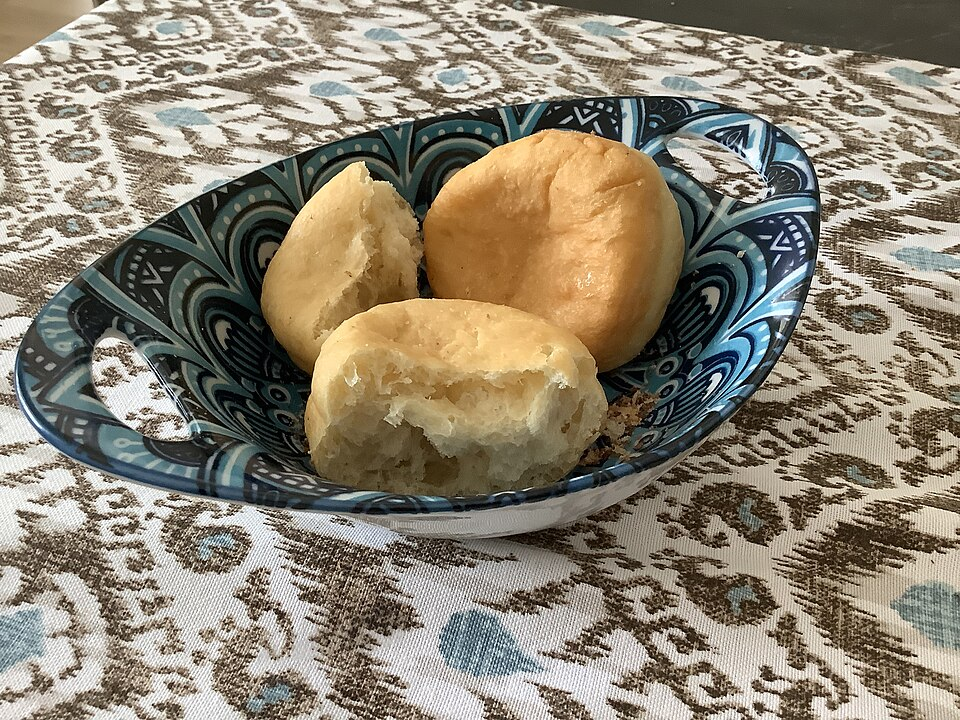

Jump directly to our traditional millet crafting process
Featured Beverage and Pastry Price List
| Item Description | Serving Size | Category | Price (KZT) |
|---|---|---|---|
| Signature Tary Latte | 350 ml | Coffee | 1,800 ₸ |
| Balkaymak Steppe Tea | 400 ml | Tea | 1,500 ₸ |
| Fresh Baursak Basket | 6 pcs | Pastry | 1,200 ₸ |
| Kurt Honey Cheesecake | 180 g | Dessert | 2,200 ₸ |
All prices include local tax and service charges.


Beverage Customizations
- Milk Selections
- Whole Cow Milk
- Oat Milk
- Camel Shubat
Artisanal Millet Crafting Process
- Harvesting proso millet in Akmola region.
- Boiling and sun-drying grains on wooden trays.
- Roasting grains in heavy cast-iron cauldrons.
- Dehulling and grinding to extract sweetness.
Extraction water has an optimal mineral profile of H2O with calcium.
Glossary of Authentic Ingredients
- Tary
- Roasted proso millet, the celebrated staple grain of Kazakh nomads.
- Balkaymak
- Thick clotted cream simmered with mountain honey until caramelized.
- Kurt
- Salted, sun-dried sour milk curds providing savory depth.
Discover regional gastronomy at the Astana Tourism Official Guide.